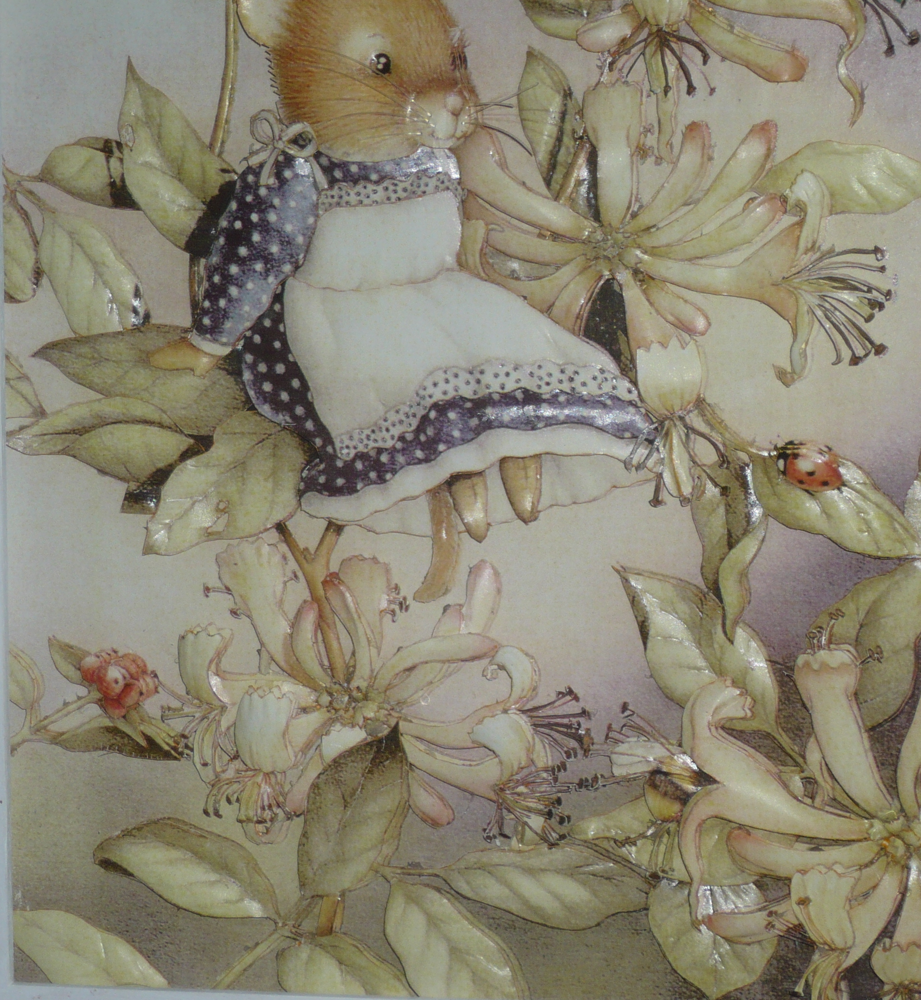

Descripción de la obra Obra originaria de Mónaco, con unas dimensiones de 40,5 cm x 51,5 cm. Fue trabajada sobre papel ilustración de 120 gramos, destacándose el manejo de luces y sombras que aportan profundidad y realismo a la composición. El marco fue seleccionado cuidadosamente, siendo acorde a los colores predominantes de la imagen, para realzar su belleza y armonizar con la obra en su totalidad.
Su valor es: $150.000.-


TÉCNICA: Arte Francés VARILLAS: Chanfle y Chata OBSERVACIÓN: Se puede realizar por encargue.


TÉCNICA: Pintura acrílica ORIGEN: Lámina original de Ecuador DETALLE: Réplica de obra del pintor Guayasamín MEDIDAS DEL CUADRO: 35 cm x 30 cm
¿Has tu mejor propuesta?
Column